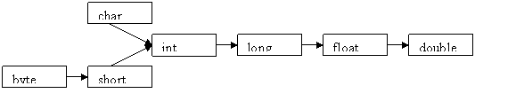

Language
Fundamentals
|
| How many
number of
non-public class definitions can a source file have |
| A source
file can
contain
unlimited number of non-public class definitions |
| List
primitive data
types, there size and there range (min, max) |
| Data
Type |
Bytes |
bits |
min |
max |
boolean
|
-
|
1
|
-
|
-
|
char
|
2
|
16
|
0
|
2^16-1
|
byte
|
1
|
8
|
-2^7
|
2^7-1 |
short
|
2
|
16
|
-2^15 |
2^15-1 |
int
|
4
|
32
|
-2^31 |
2^31-1 |
long
|
8
|
64
|
-2^63 |
2^63-1 |
float
|
4
|
32
|
-
|
-
|
double
|
8
|
64
|
-
|
-
|
|
| What
types of values does boolean
variables take |
It only takes values true
and false
|
Which
primitive datatypes
are signed
|
All except char and
Boolean
|
Is
char type signed or
unsigned
|
char type is integral but
unsigned. It range is 0 to 2^7-1
|
What
forms an integral
literal can be
|
decimal, octal and
hexadecimal, hence example it can be 28, 034 and 0x1c respectively
|
What
is the default value
of boolean
|
False
|
Why
is the main method
static
|
So that it can be invoked
without creating an instance of that class
|
What
is the difference
between class variable, member variable and automatic(local) variable
|
class
variable is a
static variable and does not belong to instance of class but rather
shared across all the instances
member variable belongs to a particular instance of class and can be
called from any method of the class
automatic or local variable is created on entry to a method and has
only method scope
|
When
are static and non
static variables of the class initialized
|
The static variables are
initialized when the class is loadedNon static variables are
initialized just before the constructor is called
|
When
are automatic
variable initialized
|
Automatic variable have
to be initialized explicitly
|
How
is an argument passed
in java, by copy or by reference
|
If the variable is
primitive datatype then it is passed by copy.
If the variable is an object then it is passed by reference
|
What
is garbage collection
|
The runtime system keeps
track of the memory that is allocated and is able to determine whether
that memory is still useable. This work is usually done in background
by a low-priority thread that is referred to as garbage collector. When
the gc finds memory that is no longer accessible from any live thread
it takes steps to release it back to the heap for reuse
|
Does
System.gc and
Runtime.gc() guarantee garbage collection
|
No
|
Operators and
assignment
|
What
are different types
of operators in java
|
Uniary ++, --, +, -, |, ~, ()
Arithmetic *, /, %,+, -
Shift <<, >>, >>>
Comparison =, instanceof, = =,!=Bitwise &, ^, |Short Circuit
&&, ||Ternary ?:Assignment =
|
How
does bitwise (~)
operator work
|
It converts all the 1
bits in a binary value to 0s and all the 0 bits to 1s, e.g 11110000
coverts to 00001111
|
What
is a modulo operator
%
|
This operator gives the
value which is related to the remainder of a divisione.g x=7%4 gives
remainder 3 as an answer
|
Can
shift operators be
applied to float types.
|
No, shift operators can
be applied only to integer or long types
|
What
happens to the bits
that fall off after shifting
|
They are discarded
|
What
values of the bits
are shifted in after the shift
|
In case of signed left
shift >> the new bits are set to zero
But in case of signed right shift it takes the value of most
significant bit before the shift, that is if the most significant bit
before shift is 0 it will introduce 0, else if it is 1, it will
introduce 1
|
|
|
Modifiers
|
What
are access modifiers
|
These public, protected
and private, these can be applied to class, variables, constructors and
methods. But if you don’t specify an access modifier then it is
considered as Friendly
|
Can
protected or friendly
features be accessed from different packages
|
No when features are
friendly or protected they can be accessed from all the classes in that
package but not from classes in another package
|
How
can you access
protected features from another package
|
You can access protected
features from other classes by subclassing the that class in another
package, but this cannot be done for friendly features
|
What
are the rules for
overriding
|
Private method can be
overridden by private, friendly, protected or public methods
Friendly method can be overridden by friendly, protected or public
methods
Protected method can be overridden by protected or public methods
Public method can be overridden by public method
|
Explain
modifier final
|
Final can be applied to
classes, methods and variables and the features cannot be changed.
Final class cannot be subclassed, methods cannot be overridden
|
Can
you change the
reference of the final object
|
No the reference cannot
be change, but the data in that object can be changed
|
Can
abstract modifier be
applied to a variable
|
No it is applied only to
class and methods
|
Can
abstract class be
instantiated
|
No abstract class cannot
be instantiated i.e you cannot create a new object of this class
|
When
does the compiler
insist that the class must be abstract
|
If one or more methods of
the class are abstract.
If class inherits one or more abstract methods from the parent abstract
class and no implementation is provided for that method
If class implements an interface and provides no implementation for
those methods
|
How
is abstract class
different from final class
|
Abstract class must be
subclassed and final class cannot be subclassed
|
Where
can static
modifiers be used
|
They can be applied to
variables, methods and even a block of code, static methods and
variables are not associated with any instance of class
|
When
are the static
variables loaded into the memory
|
During the class load time
|
When
are the non static
variables loaded into the memory
|
They are loaded just
before the constructor is called
|
How
can you reference
static variables
|
Via reference to any
instance of the class
Computer comp = new
Computer ();
comp.harddisk where hardisk is a static variable
comp.compute() where compute is a method
Via the class name
Computer.harddisk
Computer.compute()
|
Can
static method use non
static features of there class
|
No they are not allowed
to use non static features of the class, they can only call static
methods and can use static data
|
What
is static
initializer code
|
A class can have a block
of initializer code that is simply surrounded by curly braces and
labeled as static e.g.
public class Demo{
static int =10;
static{
System.out.println(“Hello world’);
}
}
And this code is executed exactly once at the time of class load
|
| Where is native modifier
used |
It can refer only to
methods and it indicates that the body of the
method is to be found else where and it is usually written in non java
language
|
What
are transient
variables
|
A transient variable is
not stored as part of objects persistent state and they cannot be final
or static
|
What
is synchronized
modifier used for
|
It is used to control
access of critical code in multithreaded programs
|
What
are volatile
variables
|
It indicates that these
variables can be modified asynchronously
|
Conversion
Casting and Promotion
|
What
are wrapped classes
|
Wrapped classes are
classes that allow primitive types to be accessed as objects.
|
What
are the four general
cases for Conversion and Casting
|
Conversion of primitives
Casting of primitives
Conversion of object references
Casting of object references
|
When
can conversion happen
|
It can happen during
Assignment
Method call
Arithmetic promotion
|
What
are the rules for
primitive assignment and method call conversion
|
A boolean can not be
converted to any other type
A non Boolean can be converted to another non boolean type, if the
conversion is widening conversion
A non Boolean cannot be converted to another non boolean type, if the
conversion is narrowing conversion
See figure below for simplicity

|
What
are the rules for
primitive arithmetic promotion conversion
|
For Unary operators :
If
operant is byte, short or a char it is converted to an int
If
it is any other type it is not converted
For binary operands :
If one of the
operands is double, the other operand is converted
to double
Else
If one of the operands is float, the other operand is converted
to float
Else
If one of the operands is long, the other operand is converted to
long
Else
both the operands are converted to int
|
What
are the rules for
casting primitive types
|
You can cast any non
Boolean type to any other non boolean type
You cannot cast a boolean to any other type; you cannot cast any other
type to a boolean
|
What
are the rules for
object reference assignment and method call conversion
|
An interface type can
only be converted to an interface type or to object. If the new type is
an interface, it must be a superinterface of the old type
A class type can be converted to a class type or to an interface type.
If converting to a class type the new type should be superclass of the
old type. If converting to an interface type new type the old class
must implement the interface
An array maybe converted to class object, to the interface cloneable,
or to an array. Only an array of object references types may be
converted to an array, and the old element type must be convertible to
the new element
|
What
are the rules for
Object reference casting
|
Casting from Old types to
Newtypes
Compile time rules
- When both Oldtypes and Newtypes are classes, one
should be subclass of the other
- When both Oldtype ad Newtype are arrays, both arrays
must contain reference types (not primitive), and it must be legal to
cast an element of Oldtype to an element of Newtype
- You can always cast between an interface and a
non-final object
Runtime rules
- If Newtype is a class. The class of the expression
being converted must be Newtype or must inherit from Newtype
- If NewType is an interface, the class of the
expression being converted must implement Newtype
|
|
|
Flow Control
and exception
|
What
is the difference
between while and do while loop
|
Do while loop walways
executes the body of the loop at least once, since the test is
performed at the end of the body
|
When
do you use continue
and when do you use break statements
|
When continue statement
is applied it prematurely completes the iteration of a loop.
When break statement is applied it causes the entire loop to be
abandoned.
|
What
is the base class
from which all exceptions are subclasses
|
All exceptions are
subclasses of a class called java.lang.Throwable
|
How
do you intercept and
thereby control exceptions
|
We can do this by using
try/catch/finally blocks
You place the normal processing code in try block
You put the code to deal with exceptions that might arise in try block
in catch block
Code that must be executed no matter what happens must be place in
finally block
|
When
do we say an
exception is handled
|
When an exception is
thrown in a try block and is caught by a matching catch block, the
exception is considered to have been handled
|
When
do we say an
exception is not handled
|
There is no catch block
that names either the class of exception that has been thrown or a
class of exception that is a parent class of the one that has been
thrown, then the exception is considered to be unhandled, in such
condition the execution leaves the method directly as if no try has
been executed
|
In
what sequence does the
finally block gets executed
|
If you put finally after
a try block without a matching catch block then it will be executed
after the try block
If it is placed after the catch block and there is no exception then
also it will be executed after the try block
If there is an exception and it is handled by the catch block then it
will be executed after the catch block
|
What
can prevent the
execution of the code in finally block
|
- The death of thread
- Use of system.exit()
- Turning off the power to CPU
- An exception arising in the finally block itself
|
What
are the rules for
catching
multiple exceptions
|
A more specific catch
block must precede a more general one in the source, else it gives
compilation error
Only one catch block, that is first applicable one, will be executed
|
What
does throws
statement declaration in a method indicate
|
This indicates that the
method throws some exception and the caller method should take care of
handling it
|
What
are checked exception
|
Checked exceptions are
exceptions that arise in a correct program, typically due to user
mistakes like entering wrong data or I/O problems
|
What
are runtime
exceptions
|
Runtime exceptions are
due to programming bugs like out of bond arrays or null pointer
exceptions.
|
What
is difference
between Exception and errors
|
Errors are usually
compile time and exceptions can be runtime or checked
|
How
will you handle the
checked exceptions
|
You can provide a
try/catch block to handle it. OR
Make sure method declaration includes a throws clause that informs the
calling method an exception might be thrown from this particular method
When you extend a class and override a method, can this new method
throw exceptions other than those that were declared by the original
method
No it cannot throw, except for the subclasses of those exceptions
|
Is
it legal for the
extending class which overrides a method which throws an exception, not
o throw in the overridden class
|
Yes it is perfectly legal
|
Explain
the user defined
Exceptions?
|
User defined Exceptions
are the separate Exception classes defined by the user for specific
purposed. An user defined can created by simply sub-classing it to the
Exception class. This allows custom exceptions to be generated (using
throw) and caught in the same way as normal exceptions.
Example:
class myCustomException extends Exception {
// The class simply has to exist to be an
exception
}
|
Objects and Classes
|
What's
the difference
between constructors and other methods
|
Constructors must have
the same name as the class and can not return a value. They are only
called once while regular methods could be called many times.
|
What
is the difference
between Overloading and Overriding
|
Overloading :
Reusing the same method name with different arguments and
perhaps a different return type is called as overloading
Overriding : Using the same method name with identical arguments and
return type is know as overriding
|
What
do you understand by
late binding or virtual method Invocation. (Example of runtime
polymorphism)
|
When a compiler for a non
object oriented language comes across a method invocation, it
determines exactly what target code should be called and build machine
language to represent that call. In an object oriented language, this
is not possible since the proper code to invoke is determined based
upon the class if the object being used to make the call, not the type
of the variable. Instead code is generated that will allow the decision
to be made at run time. This delayed decision making is called as late
binding
|
Can
overriding methods
have different return types
|
No they cannot have
different return types
|
If
the method to be
overridden has access type protected, can subclass have the access type
as private
|
No, it must have access
type as protected or public, since an overriding method must not be
less accessible than the method it overrides
|
Can
constructors be
overloaded
|
Yes constructors can be
overloaded
|
What
happens when a
constructor of the subclass is called
|
A constructor delays
running its body until the parent parts of the class have been
initialized. This commonly happens because of an implicit call to
super() added by the compiler. You can provide your own call to
super(arguments..) to control the way the parent parts are initialized.
If you do this, it must be the first statement of the constructor.
|
If
you use super() or
this() in a constructor where should it appear in the constructor
|
It should always be the
first statement in the constructor
|
What
is an inner class
|
An inner class is same as
any other class, but is declared inside some other class
|
How
will you reference
the inner class
|
To reference it you will
have to use OuterClass$InnerClass
|
Can
objects that are
instances of inner class access the members of the outer class
|
Yes they can access the
members of the outer class
|
What
modifiers may be
used with an inner class that is a member of an outer class?
|
A (non-local) inner class
may be declared as public, protected, private, static, final, or
abstract
|
Can
inner classes be
static
|
Yes inner classes can be
static, but they cannot access the non static data of the outer
classes, though they can access the static data
|
Can
an inner class be
defined inside a method
|
Yes it can be defined
inside a method and it can access data of the enclosing methods or a
formal parameter if it is final
|
What
is an anonymous class
|
Some classes defined
inside a method do not need a name, such classes are called anonymous
classes
|
What
are the rules of
anonymous class
|
The class is instantiated
and declared in the same place
The declaration and instantiation takes the form
new Xxxx () {// body}
Where Xxxx is an interface name.
An anonymous class cannot have a constructor. Since you do not specify
a name for the class, you cannot use that name to specify a constructor
|
Threads
|
Where
does java thread
support reside
|
It resides in three places
The java.lang.Thread class
(Most of the support resides here)
The java.lang.Object class
The java language and virtual machine
|
What
is the difference between Thread and a Process
|
Threads run inside process and
they share data.
One process can have multiple threads, if the process is killed all the
threads inside it are killed, they dont share data
|
What
happens when you
call the start() method of the thread
|
This registers the thread
with a piece of system code called thread scheduler
The schedulers determines which thread is actually running
|
Does
calling start ()
method of the thread causes it to run
|
No it merely makes it
eligible to run. The thread still has to wait for the CPU time along
with the other threads, then at some time in future, the scheduler will
permit the thread to run
|
When
the thread gets to
execute, what does it execute
|
The thread executes a
method call run(). It can execute run() method of either of the two
choices given below :
The thread can execute it own run() method.
The thread can execute the run() method of some other objects
For the first case you need to subclass the Thread class and give your
subclass a run() method
For the second method you need to have a class implement the interface
runnable. Define your run method. Pass this object as an argument to
the Thread constructor
|
How
many methods are
declared in the interface runnable
|
The runnable method
declares only one method :
public void run();
|
Which
way would you
prefer to implement threading , by extending Thread class or
implementing Runnable interface
|
The preferred way will be
to use Interface Runnable, because by subclassing the Thread class you
have single inheritance i.e you wont be able to extend any other class
|
What
happens when the
run() method returns
|
When the run() method
returns, the thread has finished its task and is considered dead. You
can’t restart a dead thread. You can call the methods of dead
thread
|
What
are the different
states of the thread
|
They are as follows:
Running: The state that
all thread aspire to be
Various waiting states : Waiting, Sleeping, Suspended and
Bloacked
Ready : Waiting only for the CPU
Dead : All done
|
What
is Thread priority
|
Every thread has a
priority, the higher priorit thread gets preference over the lower
priority thread by the thread scheduler
|
What
is the range of priority integer
|
It is from 1 to 10. 10
beings the highest priority and 1 being the lowest
|
What
is the default priority of the thread
|
The default priority is 5
|
What
happens when you call Thread.yield()
|
It caused the currently
executing thread to move to the ready state if the scheduler is willing
to run any other thread in place of the yielding thread.
Yield is a static method of class Thread
|
What
is the advantage of yielding
|
It allows a time
consuming thread to permit other threads to execute
|
What
happens when you call Thread.sleep()
|
It passes time without
doing anything and without using the CPU. A call to sleep method
requests the currently executing thread to cease executing for a
specified amount of time.
|
Does
the thread method start executing as
soon as the sleep time is over
|
No, after the specified
time is over the thread enters into ready state and will only execute
when the scheduler allows it to do so.
|
What
do you mean by thread blocking
|
If a method needs to wait
an indeterminable amount of time until some I/O occurrence takes place,
then a thread executing that method should graciously step out of the
Running state. All java I/O methods behave this way. A thread that has
graciously stepped out in this way is said to be blocked
|
What
threading related methods are there in
object class
|
wait(), notify() and
notifyAll() are all part of Object class and they have to be called
from synchronized code only
|
What
is preemptive scheduling
|
In preemptive scheduling
there are only two ways for the thread to leave the running state
without ecplicitly calling wait() or suspended()
It can cease t be ready to execute ()by calling a blocking I/O method)
It can get moved out by CPU by a higher priorit thread that becomes
ready to execute
|
What
is non-preemptive or Time sliced or
round robin scheduling
|
With time slicing the
thread is allowd to execute for a limited amount of time. It is then
moved to ready state, where it must contend with all the other ready
threads.
|
What
are the two ways of synchronizing the
code
|
Synchronizing an entire
method by putting the synchronized modifier in the methods declaration.
To execute the method, a thread must acquire the lock of the object
that owns the method
Synchronize a subset of a method by surrounding the desired lines of
code with curly brackets and inserting the synchronized
expression before the opening curly. This allows you to synchronize the
block on the lock of any object at all, not necessarily the object that
owns the code
|
What
happens when the wait() method is
called
|
The calling thread gives
up CPU
The calling thread gives up the lock
The calling thread goes into the monitor’s waiting pool
|
What
happens when the notify() method is
called
|
One thread gets moved out
of monitors waiting pool and into the ready state
The thread that was notified ust reacquire the monitors locl before it
can proceed
|
Using
notify () method how you can specify
which thread should be notified
|
You cannot specify which
thread is to be notified, hence it is always better to call notifyAll()
method
|
java.lang
& java.util Packages
|
What
is the ultimate ancestor of all java
classes
|
Object class is the
ancestor of all the java classes
|
What
are important methods of Object class
|
wait(), notify(),
notifyAll(), equals(), toString().
|
What
is the difference between “= =” and
“equals()”
|
“= =” does shallow
comparison, It retuns true if the two object points to the same address
in the memory, i.e if the same the same reference
“equals()” does deep comparison, it checks if the values of the data in
the object are same
|
What
would you use to compare two String
variables - the operator == or the method equals()?
|
I'd use the method
equals() to compare the values of the Strings and the == to check if
two variables point at the same instance of a String object
|
Give
example of a final class
|
Math class is final class
and hence cannot be extended
|
What
is the difference between String and
StringBuffer
|
String is an immutable
class, i.e you cannot change the values of that class
Example :
String str = “java”; // address in memory say 12345
And now if you assign a new value to the variable str then
str = “core java”; then the value of the variable at address 12345 will
not change but a new memory is allocated for this variable say 54321
So in the memory address 12345 will have value “java”
And the memory address 54321 will have value “core java” and the
variable str will now be pointing to address 54321 in memory
StringBuffer can be modified dynamically
Example:
StringBuffer strt =”java” // address in memory is say 12345
And now if you assign a new value to the variable str then
Str = “core java”; then value in the address of memory will get
replaced, a new memory address is not allocated in this case.
|
What
will be the result if you compare
StringBuffer with String if both have same values
|
It will return false as
you cannot compare String with StringBuffer
|
What
is Collection API
|
The Collection API is a
set of classes and interfaces that support operation on collections of
objects. These classes and interfaces are more flexible, more powerful,
and more regular than the vectors, arrays, and hashtables if
effectively replaces.
Example of classes: HashSet, HashMap, ArrayList, LinkedList, TreeSet
and TreeMap.
Example of interfaces: Collection, Set, List and Map.
|
What
are different types of collections
|
A collection has no
special order and does not reject duplicates
A list is ordered and does not reject duplicates
A set has no special order but rejects duplicates
A map supports searching on a key field, values of which must be unique
|
Tell
me something about Arrays
|
Arrays are fast to
access, but are inefficient if the number of elements grow and if you
have to insert or delete an element
|
Difference
between ArrayList and Vector
|
Vector methods are
synchronized while ArrayList methods are not
|
Iterator
a Class or Interface? What is its
use?
|
Iterator is an interface
which is used to step through the elements of a Collection
|
Difference
between Hashtable and HashMap
|
Hashtable does not store
null value, while HashMap does
Hashtable is synchronized, while HashMap is not
|
|
|